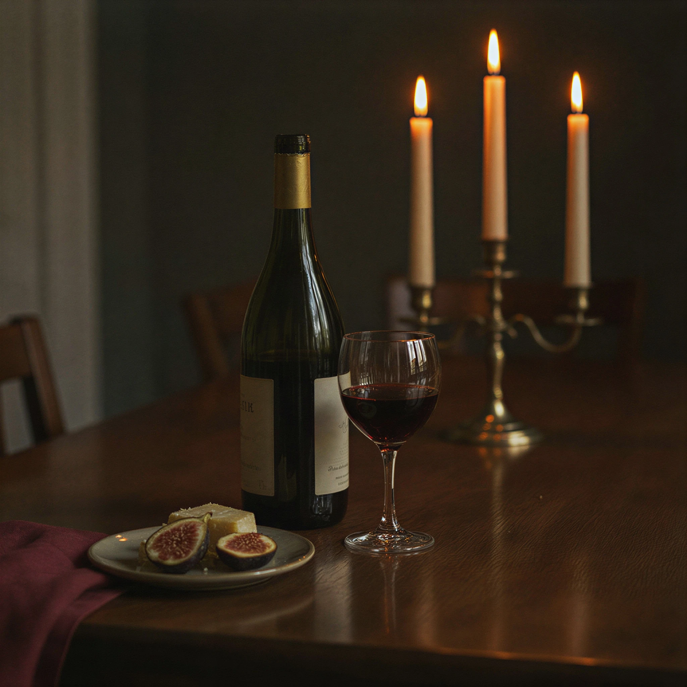

Late Summer 2026
The evening carte.
A five-course tasting is the heart of service. The à la carte list below is offered at the counter and for guests who prefer a shorter sitting. We change plates when the market asks us to.
Tasting
The sitting · 145
Five courses, paced to the table. Wine pairing, 95. A vegetarian path is composed with forty-eight hours’ notice.
-
The Evening Tasting
145A progression from the cold station through the hearth. Current opening: spot prawn, then a garden course, a fish from the Channel, ember duck or lamb, and a last plate of burnt honey.
Pairing available · Dietary paths on request
From the Cold Station
-
Spot Prawn Crudo
28Yuzu kosho, finger lime, Arbequina oil. Santa Barbara prawns, cleaned to the minute they are plated.
Wine · Albariño, Rías Baixas
-
Yellowtail & Bergamot
26Cured citrus, green almond, and a cold dashi jelly. A clean first bite for the room.
Wine · Skin-contact Grenache Blanc
-
Garden Crudités
18Whatever the bed behind the loft will give: radish, cucumber, herb oil, and a smoked almond cream.
Wine · Sparkling, Anderson Valley
-
Chilled Tomato & Peach
22Late fruit, basil seed, and a splash of fino. Served only while both are in season.
Wine · Dry rosé, Santa Ynez
From the Hearth
-
Ember-Roasted Duck
46Persimmon, smoked honey, black lime. The house signature — lacquered skin, a dark jus, and fruit that can stand the fire.
Wine · Syrah, Santa Ynez
-
Ember Lamb Loin
48Wild fennel, black garlic, roasted quince. Rested beside the oak, then sliced to the grain.
Wine · Grenache, Los Olivos
-
Channel Rockfish
42Plancha-seared, with browned butter, capers, and a spoon of sea lettuce. A quiet fish course with a mineral finish.
Wine · Chardonnay, Sta. Rita Hills
-
Fire-Blistered Squash
24Brown butter, toasted pumpkin seed, and aged goat cheese. Offered as a middle course or a vegetarian hearth plate.
Wine · Chenin Blanc
Last Plates
-
Burnt Honey Soufflé
18Bergamot cream, toasted pistachio. Baked to order; please allow twenty minutes.
Wine · Sauternes, or a glass of oloroso
-
Olive Oil Cake
16Meyer lemon curd and crème fraîche. A softer close for a long table.
Wine · Moscato, late harvest
-
The Cheese Board
22Three California cheeses, walnut honey, and warm flatbread from the hearth.
Wine · Madeira, five-year
From the Bar
-
Golden Hour
18Cognac, persimmon, black tea, and a lemon twist. The house aperitif.
-
Coastline Martini
19Gin, fino, and a single olive oil rinse. Served very cold.
-
Ember Old Fashioned
18Rye, smoked honey, and orange bitters. Finished with a burnt orange peel.
-
Non-Alcoholic Garden Cup
12Verjus, cucumber, basil, and tonic. Bright enough to open the evening.
A twenty percent hospitality charge is included. We are happy to note allergies when you reserve. The tasting cannot be altered the evening of service.